적자생존 사용 설명서
버전 0.9.37
생각은 메모로, 오늘의 계획은 할 일로, 장보기는 목록으로 남기세요. 이 설명서는 설정의 “사용 설명서” 카드에서 언제든 다시 읽을 수 있습니다.
1. 처음 사용하기와 화면 구성
적자생존은 주제별 서랍에 메모를 모아 두는 앱입니다. 서랍을 누르면 메모 목록이, 메모를 누르면 내용을 쓰는 화면이 열립니다.
헤더의 도구 찾기
서랍장 상단의 검색 버튼은 전체 검색을 엽니다. 오른쪽 메뉴(☰)에는 새 서랍, 서랍 가져오기, 사용 설명서, 설정, 휴지통이 차례로 표시됩니다. 메뉴를 열어도 서랍장 이름은 유지됩니다.
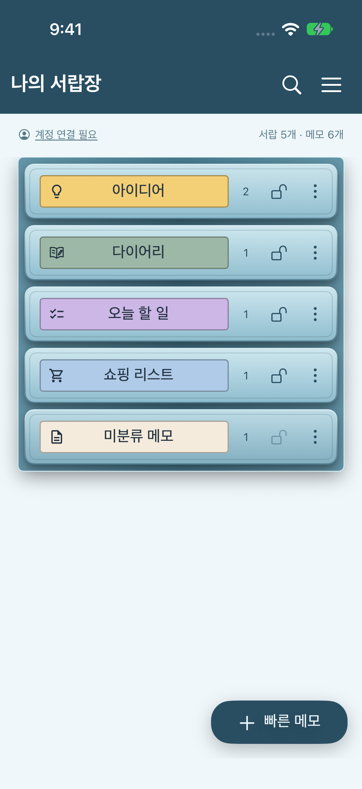
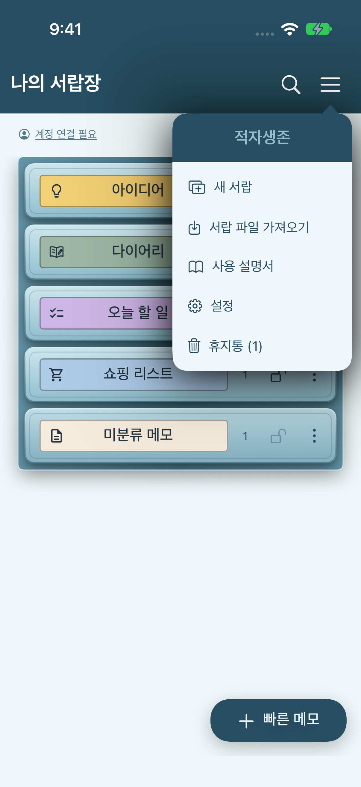
첫 메모 만들기
서랍장 메뉴(☰) → 새 서랍에서 이름을 정합니다. 서랍을 열고 ＋ 새 메모를 눌러 작성합니다. 입력은 자동 저장됩니다.
바로 적으려면 화면 아래의 ＋ 빠른 메모를 누르세요. 미분류 메모에서 시작하며, 메모 헤더의 서랍 이름으로 저장할 서랍을 고를 수 있습니다.
어느 서랍을 사용할까요?
| 서랍 | 사용 목적 |
|---|---|
| 일반 서랍 | 아이디어·여행·업무처럼 주제별로 글·사진·그림·파일을 모읍니다. |
| 다이어리 | 날짜별 기록을 남기고 달력이나 기록 목록으로 다시 읽습니다. |
| 오늘 할 일 | 날짜별 할 일, 시간·알림·반복 일정과 완료 여부를 관리합니다. |
| 쇼핑 리스트 | 장보기별 물건·수량·구매 여부를 관리합니다. |
| 미분류 메모 | 아직 보관할 서랍을 정하지 않은 메모를 모읍니다. |
서랍장 이름 바꾸기
서랍장 메뉴 → 설정 → 서랍장 카드를 펼치고 서랍장 이름 수정을 누르세요. 공백이 아닌 1~40자의 이름을 저장합니다. 같은 카드 아래에서 서랍장 테마를 고릅니다.
넓은 화면과 전체 화면
넓은 iPad 화면에서는 왼쪽에서 서랍을 고르고 오른쪽에서 목록이나 메모를 볼 수 있습니다. 전체 화면 버튼으로 내용을 넓혀 보세요.
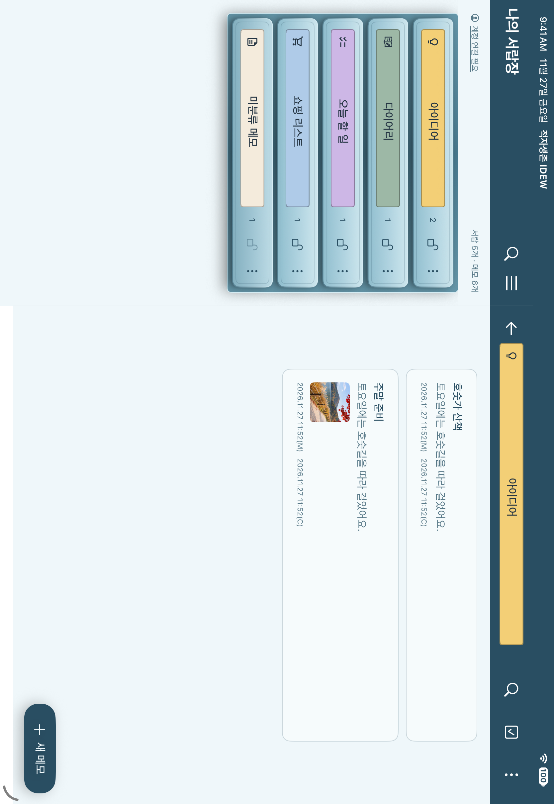
2. 서랍 만들기와 관리하기
새 서랍을 만들 때는 아직 쓰지 않은 레이블색이 있으면 그 색이 먼저 선택됩니다. 색상표의 작은 사용 표시는 다른 서랍에서 이미 고른 색을 뜻합니다. 같은 색도 선택할 수 있습니다.
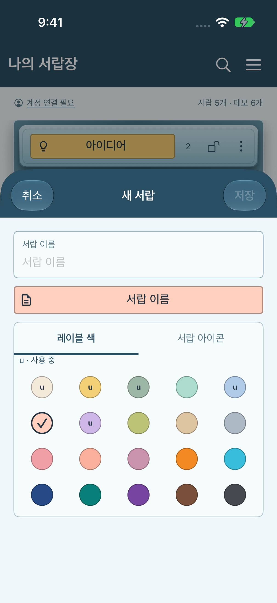
새 서랍 만들기
서랍장 메뉴(☰) → 새 서랍을 누르고 이름을 입력합니다. 기존 서랍 파일은 메뉴의 서랍 가져오기로 불러옵니다.
이름·레이블 색·아이콘 바꾸기
서랍 오른쪽의 더보기(…)를 누르고 서랍 설정을 선택하세요. 이름을 고치고, 색 원이나 아이콘을 골라 저장합니다. 레이블에는 선택한 아이콘과 서랍 이름이 함께 표시됩니다. 긴 이름은 이름 영역 안에서 흘러갑니다.
미분류 메모의 더보기는 서랍 설정을 바로 엽니다. 잠금과 암호화는 11장에서 안내합니다.
서랍 순서 바꾸기
서랍을 길게 누른 채 위아래로 끌어 원하는 위치에 놓습니다. 미분류 메모의 위치는 고정입니다.
서랍 삭제하기
서랍을 삭제하면 안의 메모는 원래 소속을 유지한 채 휴지통으로 이동합니다. 이미 휴지통에 있던 메모의 삭제 시각과 첨부는 유지됩니다. 암호화 서랍은 인증 후 보호를 유지하며 삭제합니다. 일반 메모 복원 시 원래 서랍이 없으면 미분류로 옮깁니다. 암호화 메모는 같은 ID의 복구된 암호화 서랍으로 복원하며 다른 휴지통 메모는 그대로 둡니다.
전용 서랍 다시 만들기
다이어리·오늘 할 일·쇼핑 리스트는 이름이나 아이콘을 바꿔도 전용 기능을 유지합니다. 삭제한 전용 서랍은 설정 → 전용 서랍에서 생성할 수 있습니다. 새로 만든 전용 서랍에 예전 메모가 자동으로 돌아오지는 않습니다.
↑ 목차로3. 메모 작성과 편집하기
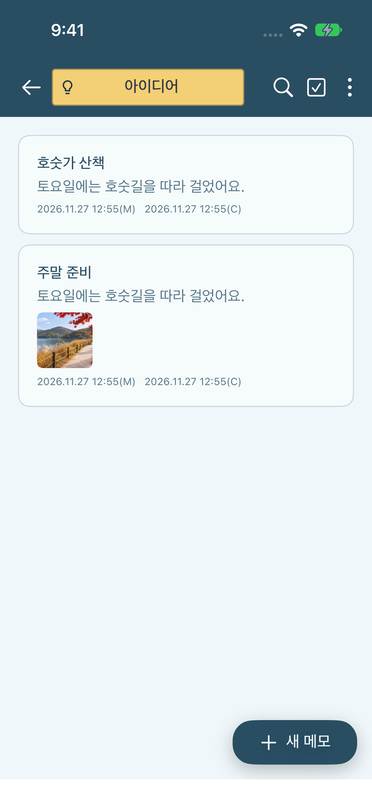
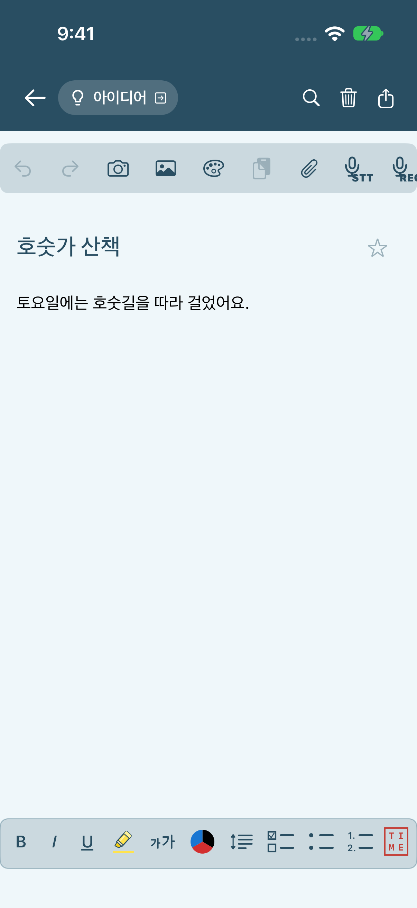
새 메모와 자동 저장
서랍 안의 ＋ 새 메모는 현재 서랍에 메모를 만듭니다. ＋ 빠른 메모는 미분류 메모에서 시작하며, 처음 저장하기 전에 헤더의 서랍 이름을 눌러 저장할 서랍을 고르고 선택 버튼으로 확정할 수 있습니다. 오늘 할 일이나 쇼핑 리스트를 고르면 그 서랍에 맞는 목록 형식으로 바뀝니다.
저장 버튼 없이 입력한 변경 내용이 자동으로 저장됩니다. 뒤로가기로 목록에 돌아가도 작성한 내용을 다시 열 수 있습니다. 아무것도 입력하지 않은 새 메모는 그대로 닫으면 됩니다. 이미 저장된 메모의 제목이나 본문을 지우는 것은 내용 수정입니다. 메모 자체를 없애려면 휴지통으로 이동하세요. 저장 실패 안내가 나오면 내용을 확인하고 다시 시도하세요.
목록 정렬하기
오늘 할 일과 다이어리는 수정 시각 대신 기록 날짜로 정렬합니다. 서랍 보기에서 최근 날짜순 또는 오래된 날짜순을 고르세요. 오늘 할 일에서는 중요 표시가 날짜 순서를 바꾸지 않습니다.
중요 메모 표시
제목 오른쪽 연한 별(☆)을 누르면 채워진 별(★)로 바뀝니다. 다시 누르면 해제합니다. 설정 → 메모 보기에서 중요 메모를 먼저 표시할 수 있습니다. 오늘 할 일 메모의 날짜 제목에는 메모 별표를 표시하지 않습니다. 목록 항목 뒤의 별은 해당 할 일·물건의 중요 표시입니다.
다른 서랍으로 옮기기
- 일반 메모를 열고 헤더의 서랍 이름 옆 이동 아이콘을 누릅니다.
- 옮길 일반 서랍을 선택한 뒤 이동 버튼을 누릅니다. 선택만으로는 이동하지 않으며 취소하면 현재 서랍을 유지합니다. 잠금이나 보호 해제 안내가 나오면 확인합니다.
오늘 할 일·쇼핑 리스트·다이어리의 메모는 다른 서랍으로 직접 옮길 수 없으며, 이동 아이콘을 표시하지 않습니다. 여러 메모를 한 번에 옮기는 방법은 여러 메모 선택하기를 참고하세요.
메모 편집 툴바 아이콘 안내
아래는 일반 메모의 툴바입니다. 연한 아이콘은 현재 사용할 수 없는 상태입니다. 글씨 서식은 바꿀 글자를 먼저 선택한 뒤 적용하세요. 오늘 할 일·쇼핑 리스트의 전용 도구는 6장과 8장에서 설명합니다.
위쪽 툴바: 되돌리기·첨부·음성
| 아이콘 | 이름 | 하는 일 |
|---|---|---|
 | 되돌리기 | 현재 편집 중에 바꾼 본문 내용을 이전 상태로 되돌립니다. 되돌릴 내용이 없으면 연하게 표시됩니다. |
 | 다시 실행 | 되돌린 본문 변경을 다시 적용합니다. 다시 적용할 내용이 없으면 연하게 표시됩니다. |
 | 카메라 | 사진을 새로 촬영해 메모에 첨부합니다. |
 | 사진 | 휴대전화에 있는 사진을 선택해 첨부합니다. |
 | 그림판 | 흰 캔버스에 그림을 그린 뒤 메모에 넣습니다. |
 | 파일 첨부 | 파일을 선택해 메모에 첨부합니다. 첨부파일을 누르면 지원하는 앱으로 열 수 있습니다. |
 | 음성 입력 | 말한 내용을 글자로 입력합니다. 제목 또는 본문에서 음성 입력을 시작한 위치에 넣으며, 선택한 글자가 있으면 그 부분을 바꿉니다. |
 | 녹음 첨부 | 목소리나 소리를 녹음해 음성 파일로 첨부합니다. STT와 달리 글자로 바꾸지 않습니다. |
아래쪽 툴바: 글씨 서식·목록·날짜
| 아이콘 | 이름 | 하는 일 |
|---|---|---|
 | 굵게 | 선택한 글자를 굵게 표시합니다. 다시 누르면 굵게 표시를 해제합니다. |
 | 기울임 | 선택한 글자를 기울여 표시합니다. 다시 누르면 해제합니다. |
 | 밑줄 | 선택한 글자에 밑줄을 넣습니다. 다시 누르면 해제합니다. |
 | 형광펜 | 선택한 글자 뒤에 노란색 배경을 넣어 강조합니다. |
| 글자크기 | 글자 크기 메뉴를 열고 A−로 줄이거나 A+로 키웁니다. 바꿀 글자를 먼저 선택하세요. | |
 | 글자색깔 | 검정·빨강·파랑 중 글자 색을 선택합니다. |
 | 줄간격 | 본문의 줄 간격을 늘리거나 줄입니다. 글자 크기를 바꾸는 기능과는 다릅니다. |
 | 체크박스 목록 | 현재 줄을 체크 목록으로 바꾸거나 체크 목록 형식을 해제합니다. 체크박스를 눌러 완료 여부를 표시할 수 있습니다. |
 | 글머리 목록 | 현재 줄을 점으로 시작하는 목록으로 바꿉니다. |
 | 번호 목록 | 현재 줄을 번호 목록으로 바꿉니다. 다음 항목의 번호는 자동으로 이어집니다. |
 | 타임스탬프 | 본문의 커서 위치에 현재 날짜와 시각을 넣습니다. |
제목에 커서를 두면 본문 서식 툴바가 숨겨지고, 본문을 누르면 다시 나타납니다. 화면이 좁으면 툴바를 좌우로 밀어 다른 도구를 볼 수 있습니다. 전체 화면에서는 양옆 툴바를 위아래로 밀 수 있습니다.
한 줄에는 체크박스·글머리·번호 목록 중 한 가지 형식만 적용합니다. 다른 목록 버튼을 누르면 형식이 바뀝니다. 번호 목록에서 엔터를 누르면 다음 번호가 이어지고, 빈 항목에서 엔터를 누르면 목록을 끝냅니다. 제목·본문과 첨부의 제한은 용량과 길이 제한에서 확인할 수 있습니다.
↑ 목차로4. 사진·그림·파일 첨부와 공유하기
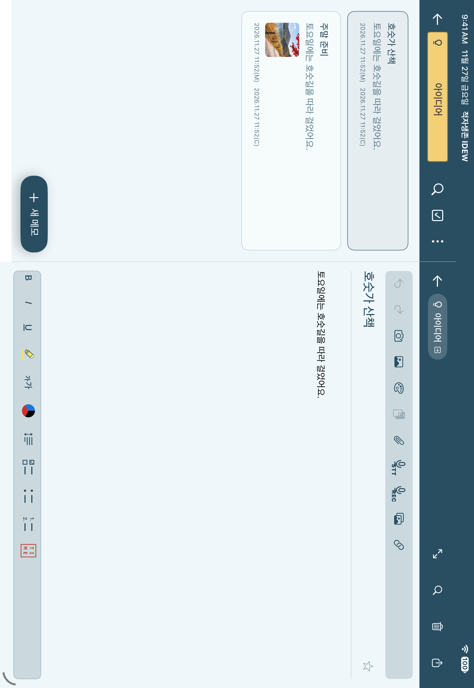
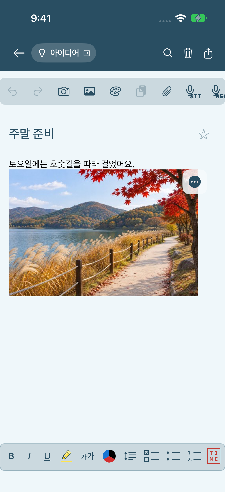
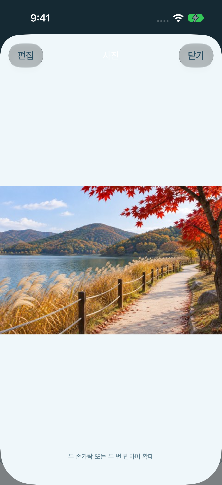
사진·녹음·파일 넣기
일반 메모의 위쪽 툴바에서 카메라·사진·그림판·파일 첨부·녹음 첨부를 선택합니다. 필요한 기기 권한을 허용하고 촬영하거나 파일을 고르세요. 각 도구의 기능과 음성 입력·녹음 첨부의 차이는 메모 편집 툴바 안내를 참고하세요.
사진·그림의 위치 바꾸기
사진 오른쪽 위 더보기(…) → 위로 이동·아래로 이동으로 위치를 바꿉니다. 사진을 길게 누른 뒤 위아래로 끌어도 됩니다. 표시된 선이 놓을 위치이며, 화면 가장자리로 끌면 자동으로 스크롤합니다. 현재 편집 중에는 실행 취소로 이동을 되돌릴 수 있습니다.
다른 메모로 첨부 옮기기
- 옮길 사진·그림·녹음·일반 파일의 … 메뉴에서 다른 메모로 이동을 누릅니다.
- 받을 메모가 있는 일반 서랍을 고릅니다. 필요한 경우 잠금이나 암호화를 해제하세요.
- 받을 메모를 선택한 뒤 이동을 누릅니다. 검색으로 메모 제목을 찾을 수도 있습니다.
한 번에 첨부 하나를 옮깁니다. 첨부는 원래 메모에서 빠지고 받는 메모의 본문 끝에 들어갑니다. 다이어리·오늘 할 일·쇼핑 리스트·백업 같은 전용 서랍의 메모는 이 이동의 출발지와 목적지에서 제외됩니다. 암호화된 서랍에서 암호화되지 않은 서랍으로 옮길 때는 보호 상태가 바뀐다는 안내를 확인하세요. 이동을 취소하거나 인증을 취소하면 원래 메모에 그대로 남습니다.
원래 메모를 열어 둔 동안에는 위쪽 툴바의 되돌리기로 첨부를 원래 위치로 되돌리고, 다시 실행으로 다시 옮길 수 있습니다. 이동 전의 다른 편집 기록도 유지됩니다. 필요하면 잠금이나 암호화 인증을 다시 요청합니다. 인증을 취소하거나 이동에 실패하면 내용을 바꾸지 않으며, 나중에 다시 시도할 수 있습니다. 메모를 닫으면 이번 편집의 되돌리기 기록은 초기화됩니다.
크게 보기와 회전
사진이나 그림을 누르면 크게 열립니다. 두 손가락으로 확대·축소하거나 두 번 눌러 확대하세요. 회전 버튼으로 방향을 바꾼 뒤 저장하면 메모 안의 기존 첨부가 회전한 이미지로 바뀝니다. 저장하지 않고 닫으면 회전을 적용하지 않습니다. 휴대전화의 갤러리 원본은 바꾸지 않습니다.
그림 그리기와 사진에 표시하기
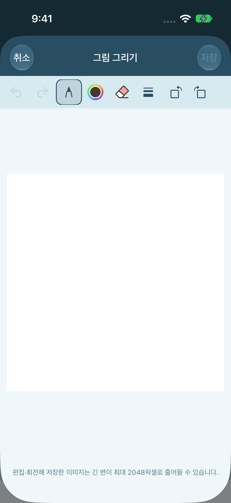
- 빈 그림은 위쪽 툴바의 그림판에서 시작합니다. 사진 위에 표시하려면 사진을 크게 열고 편집을 누릅니다.
- 색을 고르고 아래 슬라이더로 펜 굵기를 정한 뒤 캔버스에 그립니다.
- 지우개를 켜면 슬라이더가 지우개 크기로 바뀝니다. 지우개를 다시 끄거나 색을 고르면 펜으로 돌아갑니다.
- 되돌리기·다시 실행으로 현재 그림의 획을 조정합니다.
- 빈 그림은 완료, 사진 편집은 사본으로 저장을 누르면 메모에 첨부됩니다. 왼쪽 X로 닫고 변경을 버리면 저장하지 않습니다.
사진에 덧그려 저장하면 새 첨부 사본이 추가되고 기존 첨부는 남습니다. 저장한 사본이 마음에 들지 않으면 사본을 삭제하세요. 저장 후에는 그 사본의 획을 이전 편집의 되돌리기로 지울 수 없습니다. 편집·회전 저장 과정에서 해상도가 낮아질 수 있으므로 고해상도 원본은 따로 보관하세요.
읽기 전용 설명서와 지난 다이어리의 사진도 크게 볼 수 있습니다. 읽기 전용 상태의 확대 화면에는 닫기 버튼만 표시합니다.
PDF로 공유하기
- 메모를 열고 헤더의 공유 버튼을 누릅니다.
- 안드로이드 공유 창에서 카카오톡 등 원하는 앱과 받는 사람을 선택합니다.
제목·본문·글씨 서식·사진·그림을 PDF로 보냅니다. 받는 사람은 적자생존 없이도 읽을 수 있습니다. 녹음·일반 파일은 이름과 종류만 표시하며 원본 파일은 PDF에 포함하지 않습니다. 공유 창을 닫으면 보내지 않습니다. 보낸 PDF는 공유 시점의 사본이므로 이후 메모 수정이 반영되지 않습니다.
↑ 목차로5. 다이어리 기록하기
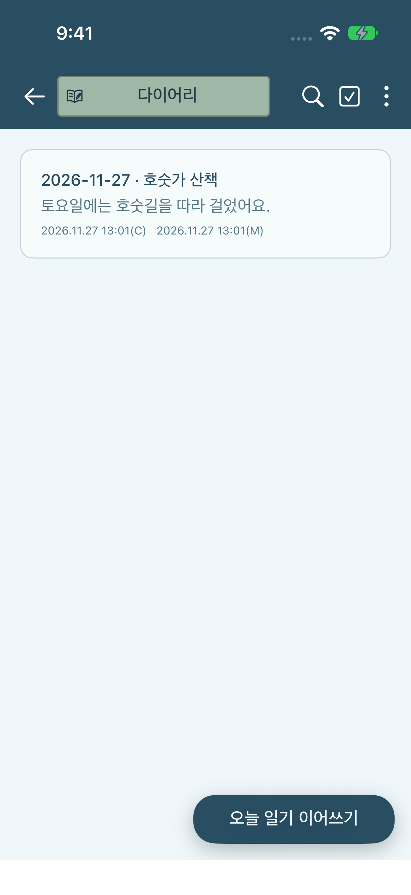
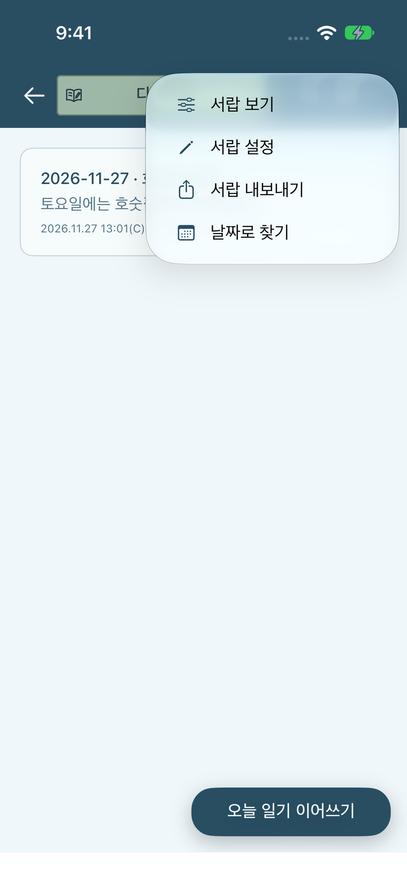
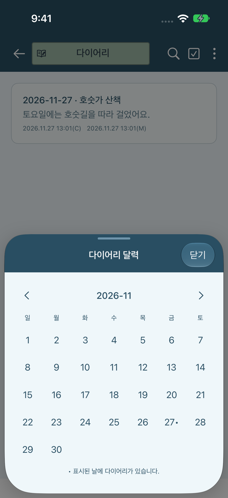
오늘 기록 이어 쓰기
다이어리 서랍을 열면 오늘 기록을 이어서 작성합니다. 날짜는 자동으로 표시하고 짧은 제목을 따로 적을 수 있습니다. 처음 내용을 입력하면 저장하며, 기록하지 않은 날의 빈 메모는 만들지 않습니다.
지난 기록 읽기와 수정하기
달력 아이콘에서 기록이 있는 날을 고르거나 기록 목록에서 엽니다. 지난 기록은 읽기 전용이며 사진 확대·중요 표시·공유·휴지통 이동은 가능합니다.
수정 잠금 해제를 누르면 그날의 기록을 보존하는 의미를 안내합니다. 아니오는 읽기 전용을 유지하고, 수정하기는 현재 열어 둔 기록의 편집을 허용합니다. 닫았다가 다시 열면 읽기 전용으로 돌아옵니다. 자정이 지나도 이미 쓰고 있던 기록은 화면을 닫기 전까지 저장할 수 있습니다.
다이어리는 다른 서랍으로 직접 이동하지 않습니다. 휴지통에서 복원해도 기록 날짜는 유지합니다. 서랍의 이름 변경과 재생성은 서랍 만들기와 관리하기를 참고하세요.
↑ 목차로6. 오늘 할 일과 시간·알림·반복 설정
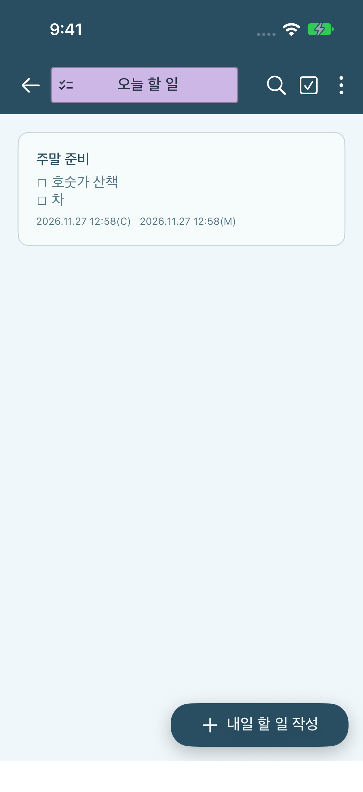
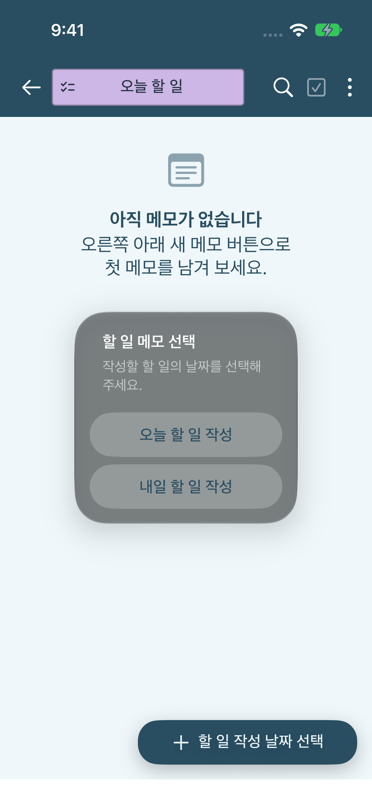
오늘·내일 작성과 삭제한 목록 복원
오늘과 내일 모두 목록이 없으면 ＋에서 날짜를 고릅니다. 한 날짜만 없으면 그 날짜의 작성 버튼만 보이며 둘 다 작성하면 버튼을 숨깁니다. 빈 체크박스만 있는 목록은 작성한 목록으로 세지 않으며 첨부가 있으면 작성한 목록입니다. 검색어와 관계없이 전체 목록을 기준으로 판단합니다. 내일 목록을 미리 만들어도 오늘의 미완료 항목을 옮기지 않습니다.
날짜 목록을 삭제하면 원본과 첨부는 휴지통에 남으며 자동 반복·이월이 그 날짜를 다시 만들지 않습니다. 직접 작성하면 새 목록으로 시작합니다. 같은 날짜의 목록이 있으면 원본을 복원할 수 없습니다. 현재 목록을 휴지통으로 옮긴 뒤 다시 복원하세요. 일괄 복원에서 충돌한 목록은 선택 상태로 남습니다. 기록으로 확인되는 과거 덮어쓰기 원본은 남아 있는 첨부와 함께 휴지통으로 복구하며 이미 사라진 파일을 재생성하지는 않습니다.
항목 추가·완료·중요 표시
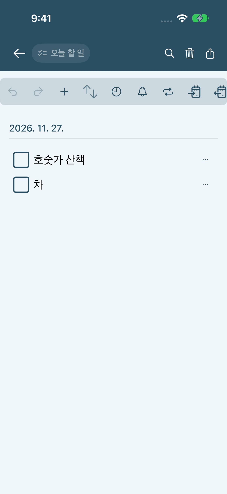
- 항목 추가(＋): 새 할 일을 추가합니다. 항목 이름을 쓰고 엔터를 눌러 다음 항목을 이어 쓸 수도 있습니다.
- 체크박스: 완료·미완료를 바꿉니다. 완료한 항목에는 취소선이 생깁니다.
- 항목 오른쪽 더보기(…): 시간 설정·알림 설정·반복 설정·중요 표시·항목 삭제를 엽니다.
- 중요 표시: 항목 메뉴에서 중요 표시를 켜거나 끕니다. 중요한 항목에는 별이 나타납니다. 날짜 제목의 별과는 별개입니다.
- 항목 삭제: 선택한 한 줄만 지웁니다. 반복 항목을 지우면 앞으로의 반복도 중단됩니다. 메모 전체를 지우는 헤더의 휴지통 버튼과 구분하세요.
상단 도구로 설정하려면 먼저 바꿀 항목의 글자를 눌러 커서를 놓으세요. 시계·종·반복 버튼은 현재 항목에 적용됩니다. 사용할 수 없는 도구는 연하게 표시됩니다. 도구가 다 보이지 않으면 툴바를 좌우로 밀어 보세요.
항목 순서 바꾸기
상단의 위·아래 화살표가 겹친 항목 이동 모드를 켭니다. 항목 옆에 나타난 이동 손잡이를 길게 누르고 위아래로 끌어 놓으세요. 이동을 마치면 같은 버튼을 다시 눌러 글쓰기 모드로 돌아옵니다.
예정 시간 정하기
- 항목 오른쪽 … → 시간 설정을 누릅니다. 또는 항목에 커서를 놓고 상단 시계 버튼을 누릅니다.
- 시간을 정하고 확인합니다. 항목에 예정 시간이 표시됩니다.
- 없애려면 시간 설정을 다시 열고 시간 없음을 누릅니다.
시간을 정하는 것만으로 알림이 울리지는 않습니다. 알림을 원하면 별도로 설정하세요.
알림 받기
- 항목 오른쪽 … → 알림 설정을 누릅니다.
- 예정 시간이 있으면 정각·10분 전·30분 전 알림을 고릅니다. 예정 시간이 없거나 별도 시각에 받고 싶으면 알림 시각 직접 선택을 사용하세요.
- 저장합니다. 기기에서 알림 권한을 요청하면 허용하세요. iOS 설정에서 알림을 허용했는지 확인합니다.
선택한 시점은 왼쪽 원에 표시됩니다. 선택 목록 아래에는 필요한 권한과 알림 동작을 설명합니다. 해제하려면 알림 없음을 선택합니다. 예정 시간을 없애면 그 시간을 기준으로 한 알림도 해제됩니다. 직접 지정한 알림 시각은 별도로 관리합니다. 반복 항목에 설정한 알림은 이후 반복에도 적용됩니다.
알림에는 할 일 내용 대신 확인 안내를 표시합니다. 가까운 알림부터 최대 60개를 예약하며 앱을 열 때 갱신합니다. 기기의 알림 설정에 따라 도착이 달라질 수 있습니다. 캘린더 일정의 알림과 앱 알림은 별도이므로 7장도 확인하세요.
미완료 항목은 어떻게 되나요?
반복이나 캘린더 연결이 없는 미완료 항목은 다음 날짜로 이동합니다. 중요도·시간·알림·수량을 유지하며 이월 횟수를 표시합니다. 이름이 같은 새 항목과도 구분됩니다. 원래 날짜에는 완료·반복 항목, 이동 기록과 첨부가 남습니다. 삭제한 날짜에는 자동으로 목록을 다시 만들거나 이월하지 않습니다.
반복 할 일 만들기
- 항목 이름을 적고 항목의 … → 반복 설정을 누릅니다.
- 매일·평일·주말·요일 선택 중에서 고릅니다. 요일 선택에서는 원하는 요일을 여러 개 고를 수 있습니다.
- 저장을 누릅니다. 항목의 설정을 다시 열어 변경할 수 있습니다.
예를 들어 목요일만 고르면 목요일마다 새 미완료 항목이 생깁니다. 지난번 완료 여부와 관계없이 반복합니다.
- 완료 체크는 그날의 완료 표시입니다. 이후 반복은 계속됩니다.
- 이름·요일·중요 표시 변경은 오늘 이후 미완료 반복 항목에 반영합니다. 과거 기록과 완료 항목은 유지합니다.
- 반복 안 함 또는 항목 삭제는 앞으로의 반복을 중단하며 미리 만든 미래의 미완료 반복 항목도 제거합니다.
- 며칠 뒤에 앱을 열면 오늘에 필요한 항목을 보완합니다. 반복만 있는 지난 날짜 목록을 모두 만들지는 않습니다.
반복 항목은 미완료 일반 항목처럼 매일 다음 날로 넘기지 않습니다. 같은 이름으로 따로 만든 반복 일정은 각각 관리됩니다. 캘린더에 연결한 항목은 반복 할 일로 바꿀 수 없습니다.
↑ 목차로7. 휴대전화 캘린더와 연결하기
휴대전화에 연결된 캘린더의 일정을 사용합니다. 캘린더 접근 권한을 허용해야 하며, 목록에 표시되는 캘린더를 선택합니다. 네이버 캘린더 직접 연동은 제공하지 않습니다.
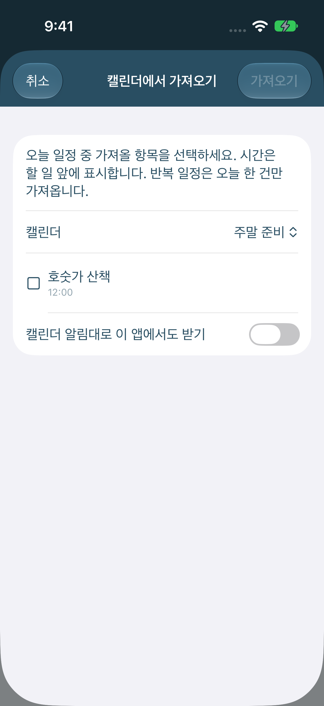
| 기능 | 무엇을 하나요? |
|---|---|
| 캘린더에 등록 | 적자생존의 할 일을 캘린더 일정으로 보냅니다. 이후 업데이트는 캘린더 일정을 바꿉니다. |
| 캘린더에서 가져오기 | 캘린더의 오늘 일정을 오늘 할 일로 가져옵니다. 이후 캘린더에서 업데이트는 적자생존의 항목을 바꿉니다. |
할 일을 캘린더에 등록하기
- 오늘 또는 내일 할 일에서 보낼 항목에 커서를 놓고 상단의 캘린더에 화살표가 있는 등록 아이콘을 누릅니다.
- 캘린더·날짜·하루 종일 여부·시작과 종료 시간·알림을 확인해 등록합니다.
- 할 일을 수정한 뒤 같은 버튼에서 업데이트하면 연결된 기존 일정을 변경합니다.
등록한 항목에는 연동 표시가 나타납니다. 반복 할 일은 캘린더로 보낼 수 없습니다. 할 일을 완료하거나 삭제하거나 다음 날로 넘겨도 이미 등록한 캘린더 일정은 유지됩니다. 캘린더 일정 삭제는 캘린더 앱에서 하세요.
캘린더의 오늘 일정 가져오기
- 오늘 날짜의 할 일 목록을 열고, 상단 툴바에서 캘린더와 왼쪽 화살표가 그려진 가져오기 아이콘을 누릅니다. 도구가 다 보이지 않으면 툴바를 좌우로 밀어 보세요.
- 캘린더를 고르고 오늘 일정 중 필요한 항목을 체크해 가져옵니다.
- 최신 내용을 다시 가져오려면 해당 항목에 커서를 두고 상단 캘린더 아이콘을 누릅니다. 미리보기의 제목·시간·장소·캘린더를 확인한 뒤 캘린더에서 업데이트를 누릅니다.
가져온 일정의 제목과 시간·장소·캘린더 정보를 확인할 수 있습니다. 시간은 제목과 구분해 표시하며 종일 일정은 종일로 표시합니다. 이미 연결된 일정은 중복으로 가져오지 않습니다. 캘린더의 반복 일정은 오늘 회차만 가져옵니다. 완료 체크는 적자생존에서만 관리합니다.
↑ 목차로8. 쇼핑 리스트 사용하기
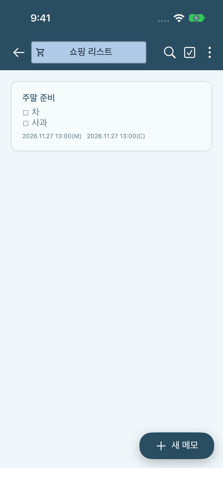
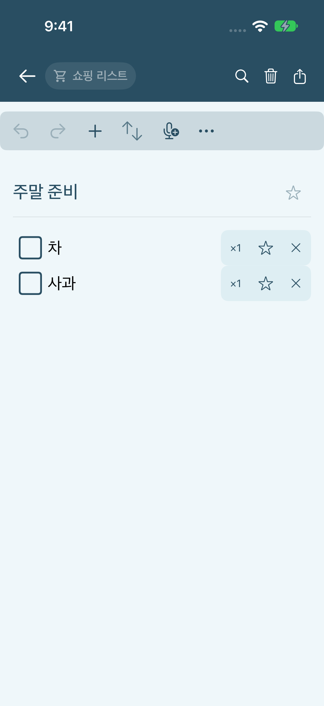
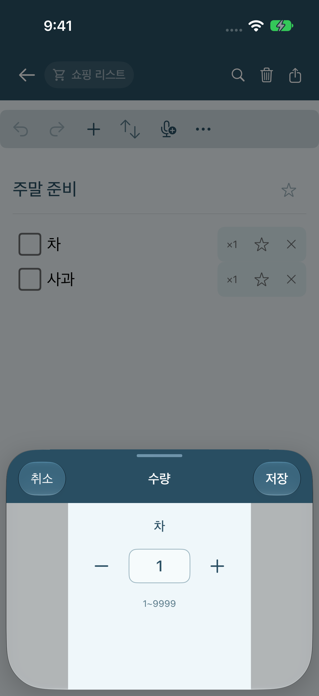
- 쇼핑 리스트 서랍에서 새 메모를 만들고 장보기 이름을 적습니다.
- 물건 이름을 입력하고 항목 뒤 수량(×숫자)을 누릅니다.
- −·＋ 버튼이나 숫자 입력으로 수량을 정합니다. 기본은 1이며 1~9999까지 입력합니다.
- 물건을 샀으면 앞 체크박스를 누릅니다. 꼭 살 물건은 별표를 켜세요.
장보기별로 목록을 여러 개 만들 수 있습니다. 항목 추가와 이동 모드는 오늘 할 일의 목록 도구를 참고하세요. 쇼핑 항목 뒤에서는 수량·별표·삭제 버튼을 바로 사용할 수 있습니다. 쇼핑 리스트에는 반복 설정이 없습니다. 위젯 사용법은 홈 화면 위젯 사용하기를 참고하세요.
↑ 목차로9. 홈 화면 위젯 사용하기
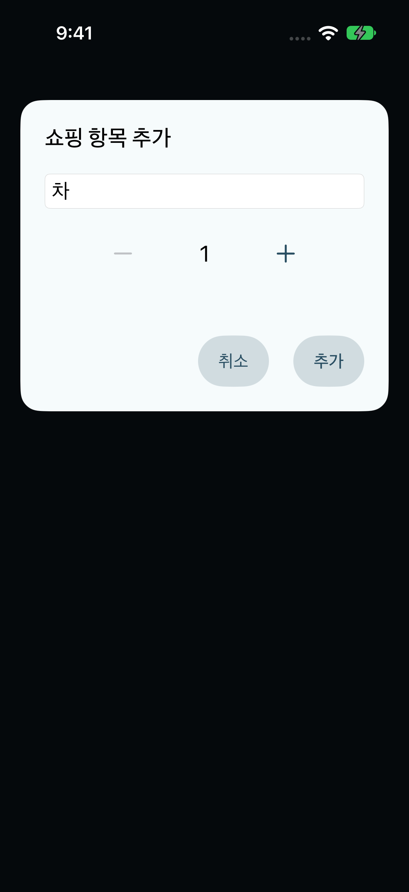
위젯 추가
홈 화면의 빈 곳을 길게 누르고 편집 메뉴에서 위젯 추가를 선택하세요. 적자생존을 검색하고 오늘 할 일 또는 쇼핑 리스트를 골라 추가하세요.
위젯에서 할 수 있는 일
- 항목 줄을 누르면 완료·미완료 또는 구매·미구매가 바뀝니다.
- ＋는 앱의 빠른 추가 화면을 열어 해당 목록에 항목을 넣습니다.
- 제목이나 메모 열기를 누르면 앱에서 해당 메모를 엽니다.
- 별표·반복 아이콘은 표시용입니다. 중요 표시·반복·수량·순서 변경은 앱에서 합니다.
오늘 할 일 위젯은 오늘 날짜의 목록을, 쇼핑 위젯은 가장 최근 수정한 활성 목록을 보여 줍니다. 남은 개수는 미완료 항목 수이며 물건 수량의 합계가 아닙니다.
표시 순서
미완료 중요 → 미완료 일반 → 완료 중요 → 완료 일반 순서입니다. 같은 묶음 안에서는 원래 항목 순서를 유지합니다. 위젯 정렬은 메모 안의 순서를 바꾸지 않습니다.
잠긴 서랍의 위젯
서랍에 잠금을 설정하면 위젯은 내용을 숨깁니다. 앱에서 인증해 잠시 열어도 위젯의 숨김은 유지됩니다. 앱 열기로 내용을 확인하거나, 위젯에 다시 표시하려면 해당 서랍의 잠금 설정을 해제하세요. 잠금 중에도 반복 항목의 날짜 처리는 계속됩니다.
↑ 목차로10. 메모 찾기와 휴지통 관리하기
찾기 범위
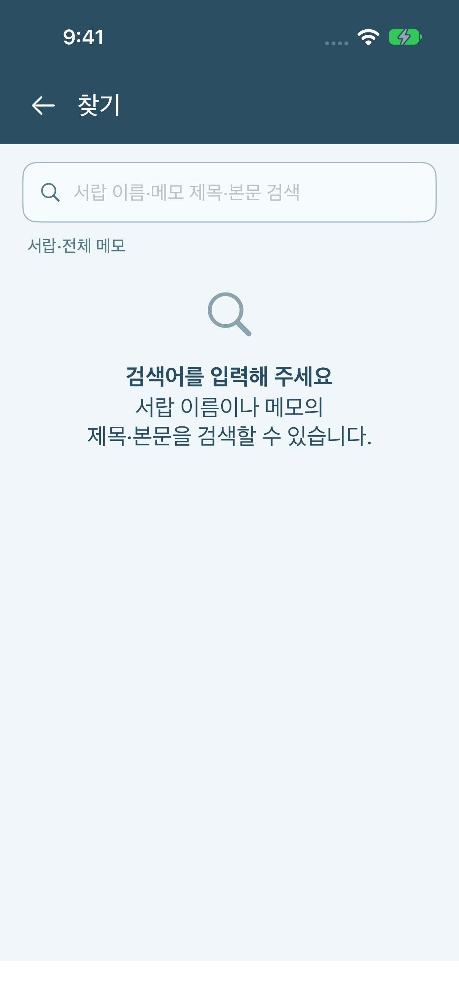
| 찾기 버튼 위치 | 찾는 내용 |
|---|---|
| 서랍장 | 여러 서랍의 이름과 메모 제목·본문 |
| 서랍 안 | 현재 서랍의 메모 제목·본문 |
| 메모 안 | 현재 메모의 본문에서 일치하는 글자 |
서랍장에서 돋보기를 누르고 검색어를 입력한 뒤 결과의 서랍이나 메모를 누릅니다. 서랍 안에서는 검색어가 있는 메모만 목록에 남습니다. 메모 안에서는 일치하는 글자를 강조하며 내용은 바뀌지 않습니다. X는 찾기를 닫습니다. 설명서 찾기는 설명서 이용하기에서 안내합니다.
잠긴 서랍은 기본 찾기 대상에서 제외됩니다. 잠긴 서랍 내용 검색 포함하기 (인증 필요)를 눌러 인증하면 포함할 수 있습니다. 암호화된 내용도 인증 후 찾습니다.
여러 메모 선택하기
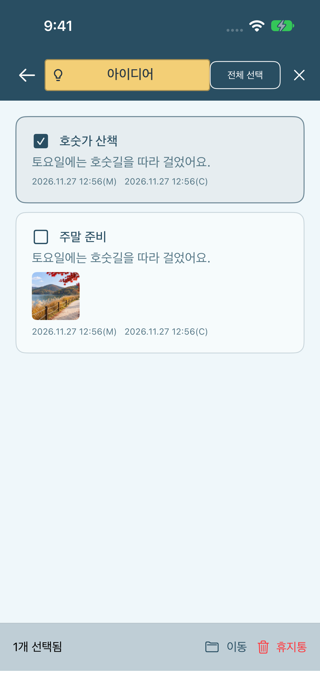
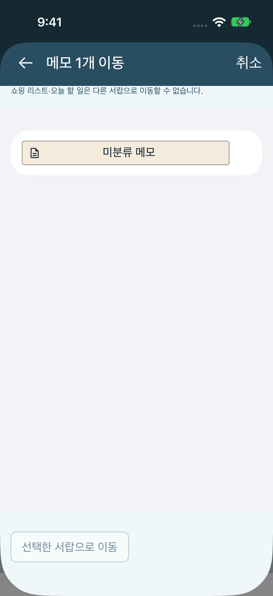
- 서랍의 헤더에서 선택 버튼(체크 표시)을 누릅니다.
- 목록에서 처리할 메모를 선택합니다.
- 아래쪽의 서랍 이동 또는 휴지통으로 이동을 누릅니다. 서랍 이동에서는 목적지를 선택한 뒤 이동 버튼으로 확정합니다. 이동 가능한 일반 메모만 다른 서랍으로 옮길 수 있습니다.
작업 뒤 아래 안내에 실행취소가 표시되면 눌러 방금 작업을 되돌릴 수 있습니다. 선택을 끝내려면 뒤로가기를 누릅니다.
메모 하나를 휴지통으로 옮기기
메모 편집 헤더의 휴지통으로 이동 버튼을 누르고 확인합니다. 제목·본문·첨부가 없는 빈 메모에서는 버튼이 비활성화됩니다. 항목 뒤 X는 한 줄 삭제이고, 메모 헤더의 휴지통은 메모 전체 삭제입니다.
휴지통에서 복원하기
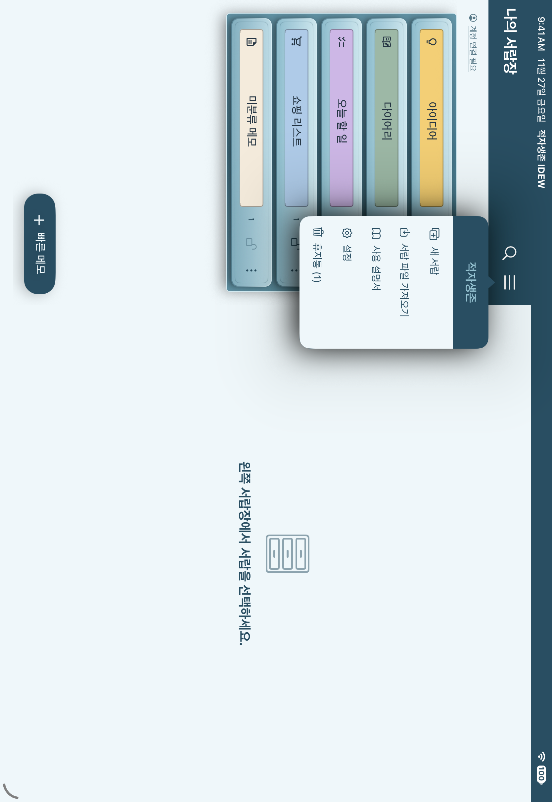
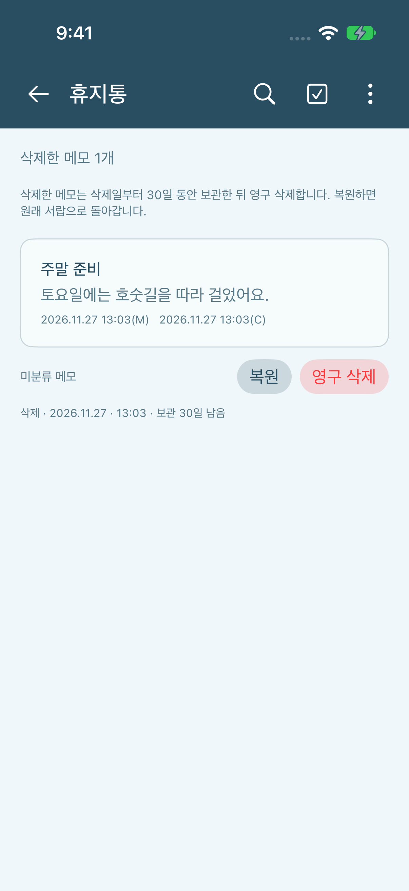
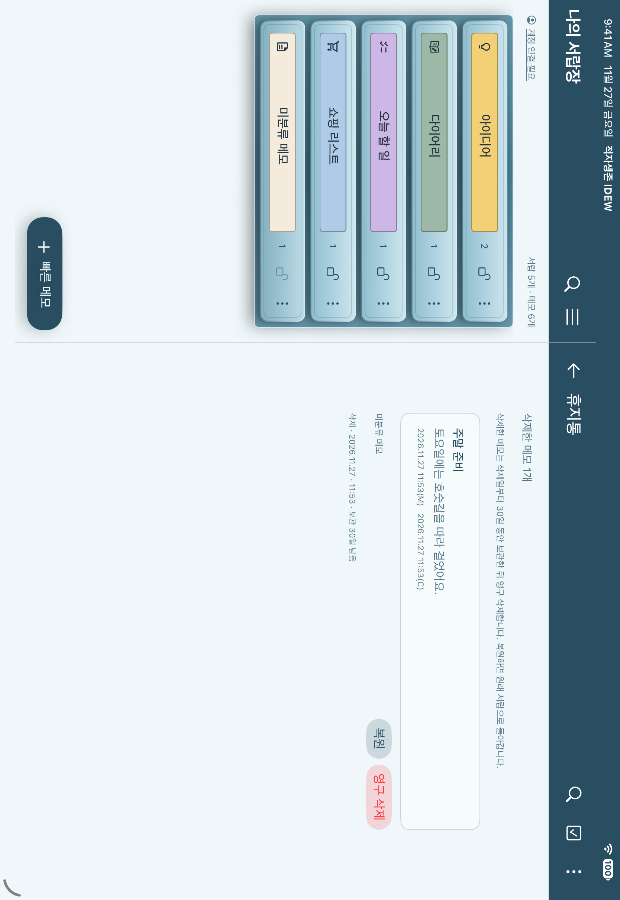
- 서랍장 오른쪽 위의 메뉴(☰)를 열고 휴지통을 누르세요.
- 메모 카드의 복원·영구 삭제 버튼이 있는 줄 왼쪽에서 원래 서랍의 아이콘과 이름을 확인합니다. 되살릴 메모의 복원을 누릅니다. 필요하면 먼저 메모를 열어 내용을 확인하세요.
- 원래 소속 서랍에서 복원한 메모를 확인합니다. 서랍 삭제 때 미분류 메모로 옮겨진 메모는 미분류 메모에서 확인합니다.
잠긴 서랍 메모를 보려면 상단의 잠긴 서랍 메모 포함하기 (인증 필요)로 인증합니다. 휴지통으로 옮긴 지 30일이 지나면 첨부와 함께 자동 영구 삭제됩니다. 기기 상태에 따라 정리 시점이 늦어질 수 있습니다. 30일 전에 복원하면 정리 대상에서 제외되며 다시 휴지통으로 옮기면 그때부터 새로 계산합니다.
↑ 목차로11. 서랍 잠금과 암호화하기
비밀번호 변경 또는 복구 키 재설정은 이전 인증 세션을 만료시킵니다. 새 세션은 기존 암호화 키를 유지하므로 메모·첨부를 보존하며 다른 기기와 동기화할 수 있습니다. 생체 인증은 다시 연결하세요. iOS는 암호화가 이미 설정된 기기에 다른 복구 구성을 덮어쓰지 않습니다.
| 보호 방법 | 차이 |
|---|---|
| 서랍 잠금 | 지문 또는 4자리 PIN 인증으로 앱에서 내용을 여는 동작을 막습니다. |
| 서랍 암호화 | 메모 제목·본문·첨부를 암호화해 저장하며, 해당 자료는 백업과 휴지통에서도 암호화 상태를 유지합니다. |
오늘 할 일·쇼핑 리스트·미분류 메모·다른 앱 자료를 받는 백업 서랍에는 암호화를 적용하지 않습니다. 중요한 개인 기록은 암호화할 수 있는 일반 서랍에 보관하세요. 오늘 할 일·쇼핑 리스트에는 기본 잠금을 사용할 수 있습니다.
기본 서랍 잠금
설정 → 서랍 잠금에서 PIN·지문 사용·앱 전환 후 자동 잠금 시간을 설정합니다. 서랍장의 열린 자물쇠를 누르면 잠금을 설정하고, 잠긴 서랍을 누르면 인증해 엽니다. 위젯의 잠금 동작은 홈 화면 위젯 사용하기를 참고하세요.
처음 암호화 설정하기
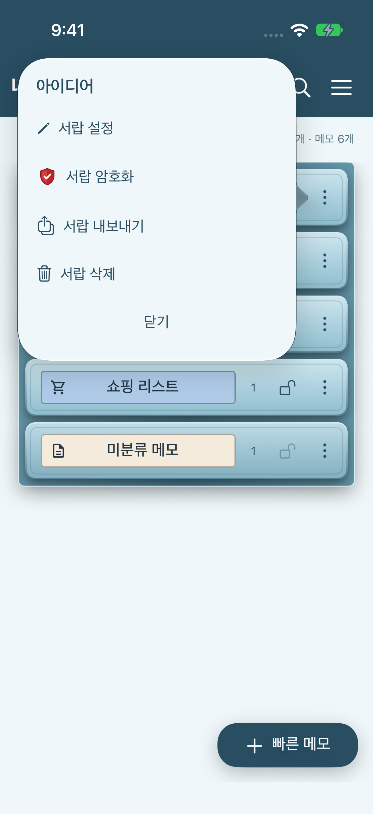
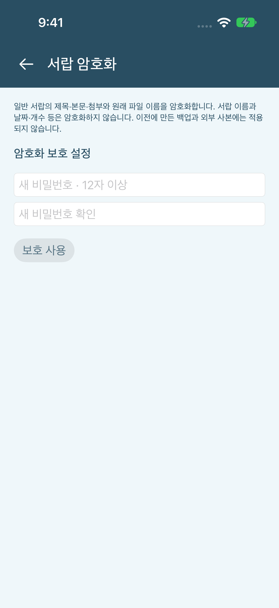
- 보호할 일반 서랍의 더보기 → 서랍 암호화를 누릅니다.
- 12자 이상의 암호화 비밀번호를 두 번 입력하고 비밀번호 설정을 누릅니다. 4자리 잠금 PIN과 다른 비밀번호입니다.
- 표시된 복구 키를 종이나 비밀번호 관리 도구 등 앱 밖의 안전한 곳에 보관합니다.
- 보관 확인을 체크하고 비밀번호 설정을 눌러 완료합니다.
- 이 서랍은 아직 암호화되지 않았다는 안내에서 암호화 보호 사용을 눌러 적용합니다.
다른 서랍도 각각 더보기 → 서랍 암호화에서 인증하고 보호를 적용합니다. 암호화 서랍들은 같은 비밀번호를 사용하므로 처음 설정한 비밀번호와 복구 키를 사용합니다. 설정을 완료하기 전에 취소했다면 그때 본 복구 키는 사용하지 마세요.
방패 배지와 자물쇠 표시
서랍장 레이블과 서랍 안 제목 레이블의 오른쪽 위에 있는 빨간 방패·흰 체크 배지는 그 서랍에 암호화가 적용되었다는 표시입니다. 인증해 내용을 열어도 암호화는 유지되므로 배지는 사라지지 않습니다. 자물쇠는 인증을 거쳐 열어야 하는 서랍이라는 뜻이고, 방패는 자료를 암호화해 저장한다는 뜻입니다.
평소 서랍 열기와 자동 잠금
암호화된 서랍을 열 때 암호화 비밀번호 또는 이 기기에 연결한 Face ID·Touch ID로 인증하세요. 서랍을 나가면 다시 잠깁니다.
생체 인증 연결과 비밀번호 변경
설정의 서랍 암호화에서 이 기기의 생체 인증을 연결하거나 비밀번호를 변경하세요. Face ID나 Touch ID를 다시 등록했다면 암호화 비밀번호로 열고 다시 연결하세요.
비밀번호 변경은 모든 암호화 서랍에 적용됩니다. 변경 전에 만든 백업은 당시 비밀번호로 열어야 합니다. 변경 후 새 백업을 만들어 두세요.
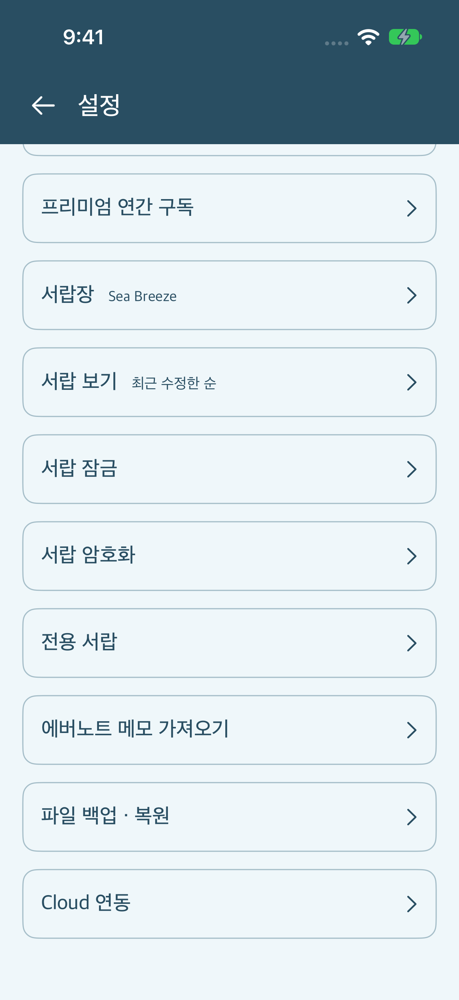
비밀번호를 잊었을 때
- 인증 화면의 비밀번호를 잊으셨나요?를 누릅니다.
- 보관한 복구 키와 새 비밀번호를 입력하고 비밀번호 재설정하고 열기를 누릅니다.
새 비밀번호는 모든 암호화 서랍에 적용됩니다. 취소하면 원래 인증 화면으로 돌아갑니다. 복구 키는 앱에서 다시 보여 주지 않으므로 처음 설정할 때 정확히 보관하세요.
암호화 보호 해제와 서랍 삭제
서랍의 더보기 → 서랍 암호화 해제에서 인증한 뒤 서랍 이름을 확인하고 보호 해제를 누릅니다. 선택한 서랍의 자료가 암호화되지 않은 상태로 저장됩니다. 취소하면 보호를 유지합니다. 서랍을 삭제하려면 보호 해제를 마친 뒤 더보기에서 서랍 삭제를 선택합니다.
보호 범위 확인
- 서랍 이름·메모 개수·작성 및 수정 날짜·첨부 종류는 암호화하지 않습니다. 민감한 내용을 서랍 이름에 넣지 마세요.
- 백업 전체를 암호화하는 기능은 아닙니다. 암호화한 서랍의 내용만 보호되며, 일반 서랍과 오늘 할 일·쇼핑 리스트는 암호화되지 않습니다.
- 암호화 전에 만든 백업이나 외부 앱에 보낸 사본은 자동으로 암호화되지 않습니다. 외부 공유 파일은 직접 관리하세요.
12. 백업·복원과 에버노트 가져오기
새 기기로 옮기기
백업만 있어요
최신 백업을 선택하세요. 복원하면 이 기기의 메모와 첨부가 교체됩니다. 보관할 자료가 있다면 먼저 파일로 백업한 뒤 전체 교체를 확인하세요.
동기화 자료만 있어요
이전 기기와 같은 계정으로 연결하세요. 동기화 → 상세 내역 → 동기화 자료에서 복구를 누르면 이 기기의 변경을 보내지 않고 가져옵니다.
둘 다 있어요
먼저 백업을 복원하세요. 백업 뒤에 다른 기기에서 동기화한 변경이 있을 때만 지금 동기화를 누르세요.
마지막으로 이전 기기의 메모 하나를 찾아 첨부까지 열어 보세요.
자동 동기화와 받기 전용 복구
서랍장 왼쪽의 상태를 누르면 원인과 다음 조치가 보입니다. 좁은 화면에서는 아이콘만 표시될 수 있습니다. 무료 버전에서는 이 표시가 숨겨집니다.
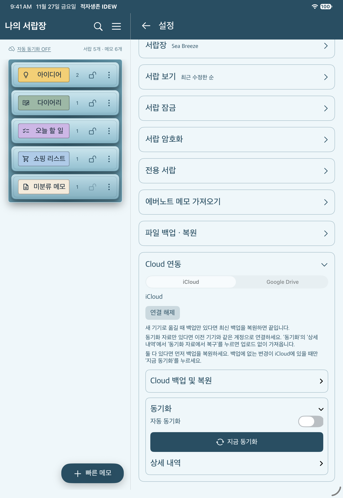
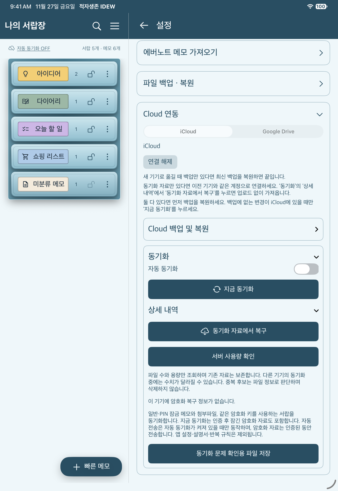
서랍장에 ‘보호 확인 필요’가 보이면 그 표시를 누른 뒤 ‘지금 동기화’를 선택하세요. 인증을 마치면 동기화가 시작됩니다. 보호 상태 확인이 끝나면 표시가 사라집니다.
자동 동기화를 켜면 암호화 서랍을 열어 인증할 때 다른 기기에서 보낸 변경을 확인합니다. 이 기기에서 수정한 내용이 없어도 새 메모와 수정 내용을 자동으로 받습니다.
휴대폰에서 메모를 수정해 동기화를 마쳤다면 태블릿에서 같은 서랍을 열고 인증하세요. 먼저 기기에 저장된 내용이 보이고, 동기화가 끝나면 수정한 내용이 반영됩니다. 자동 동기화가 꺼져 있다면 인증한 뒤 ‘지금 동기화’를 누르세요.
동기화 상태 읽기
같은 첨부를 사용해도 제목이나 내용이 다른 메모는 각각 보관됩니다. 백업을 만들기 전에 한 번도 동기화하지 않았다면, 복원한 내용과 서버 내용이 다를 때 두 버전이 남을 수 있습니다. 두 메모를 열어 필요한 내용을 확인한 뒤 삭제하세요.
요청 제한은 잠시 기다리면 다시 시도합니다. 저장 공간이 부족하면 해당 클라우드의 공간을 확보하고, 권한이 철회됐으면 원래 계정으로 다시 연결하세요. 손상된 첨부는 서버 사본으로 복구를 시도합니다. 복구할 수 없는 첨부의 메모는 보류하고 다른 메모는 계속 동기화합니다. 양쪽 내용이 다르고 어느 쪽이 최신인지 확인할 수 없으면 충돌 사본이 남을 수 있습니다.
일반 동기화는 현재 보호 대상인 메모·서랍의 과거 이동·삭제 이력을 해당 ID 전체로 격리하고 다른 일반 자료는 계속 처리합니다. 격리된 이력과 미전송 변경은 기기에 보관합니다. 복구 정보 게시 중 암호화 인증이 만료되면 전송 대기를 유지하며, 다시 인증한 뒤 동기화하면 재시도합니다. 실제 복구 정보 검증 실패는 오류로 표시합니다.
복구 중에는 메모·첨부·복구 정보를 업로드하지 않습니다. 기존 편집과 전송 대기는 유지되며, 나중에 동기화하면 전송됩니다.
동기화에서 자동 동기화를 켜거나 끄세요. 지금 동기화는 한 번만 실행하고 자동 설정을 바꾸지 않습니다. 받기 전용 복구는 기기에 남은 변경을 서버에 보내지 않습니다.
암호화 복구 정보가 발견되면 비밀번호 또는 복구 키로 인증하거나 일반 자료만 복구할 수 있습니다. 복구 정보의 Drive 보관 상태는 메모 전송 완료 상태와 별개입니다. 작업 중단 시 완료된 단계와 미전송 변경을 보존하므로 같은 작업을 다시 실행하세요. 저장 오류가 있으면 내용을 확인하고, 편집 중에는 저장을 마친 뒤 다시 시도하세요.
로컬 파일에 백업하고 복원하기
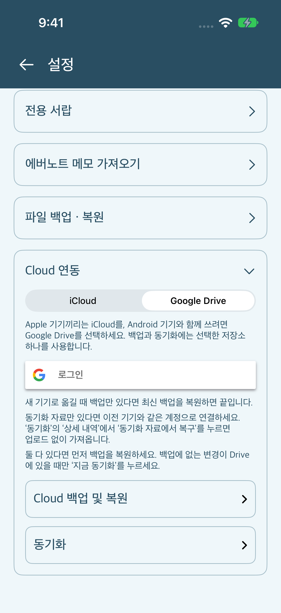
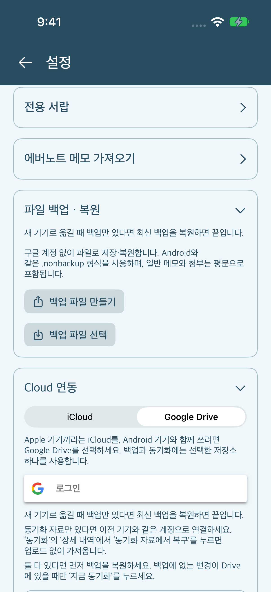
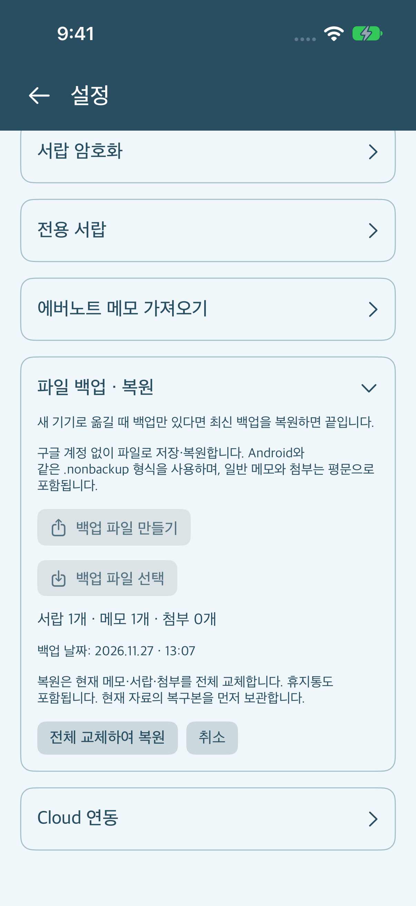
- 설정 맨 아래의 로컬 백업 및 복원을 엽니다.
- 백업 파일 저장을 누르고 파일 앱에서 저장할 폴더와 파일 이름을 정합니다. .nonbackup 파일 하나에 서랍·메모·휴지통·설정과 첨부파일을 함께 보관합니다.
- 파일에서 복원을 누르고 저장한 백업 파일을 고릅니다. 날짜와 서랍·메모·첨부 개수 및 교체 안내를 확인합니다.
- 복원을 누르면 현재 자료를 백업 내용으로 교체합니다. 현재 자료와 합치는 동작이 아닙니다. 취소하면 적용하지 않습니다.
- 복원 직전 상태는 기기에 보관합니다. 마지막 복원 되돌리기로 돌아갈 수 있습니다.
파일 백업은 계정 연결 없이 사용할 수 있습니다. 파일 앱에서 ‘나의 iPhone’, ‘나의 iPad’ 또는 iCloud Drive처럼 원하는 위치를 선택하세요. 잠금 서랍을 복원하려면 이 기기에 PIN을 설정하세요. 암호화한 내용은 복원 후에도 비밀번호나 복구 정보가 필요합니다.
iCloud / Google Drive 백업은 수동 백업입니다
설정 → Cloud 연동 → Cloud 백업 및 복원을 여세요. 백업하려면 선택한 저장소로 백업하는 버튼을 누르세요. 복원하려면 백업 목록을 불러오고 날짜와 메모 수를 확인한 뒤 원하는 백업을 선택하세요.
서랍·메모·첨부·반복 설정과 휴지통에 남아 있는 메모도 백업에 포함합니다. 중요한 변경 뒤와 전화기를 바꾸기 전에 새 백업을 만들고 완료 안내를 확인하세요.
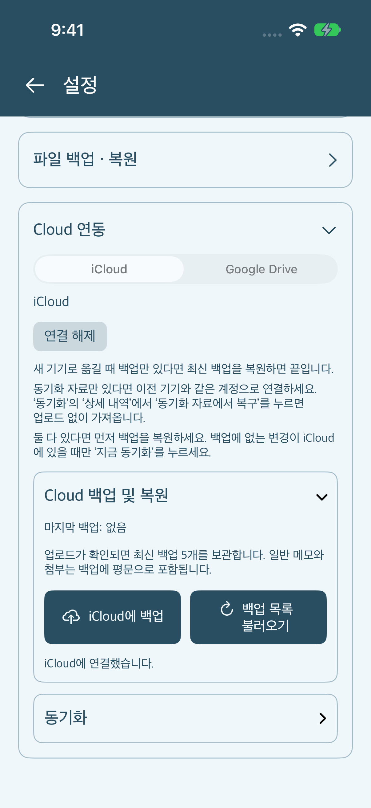
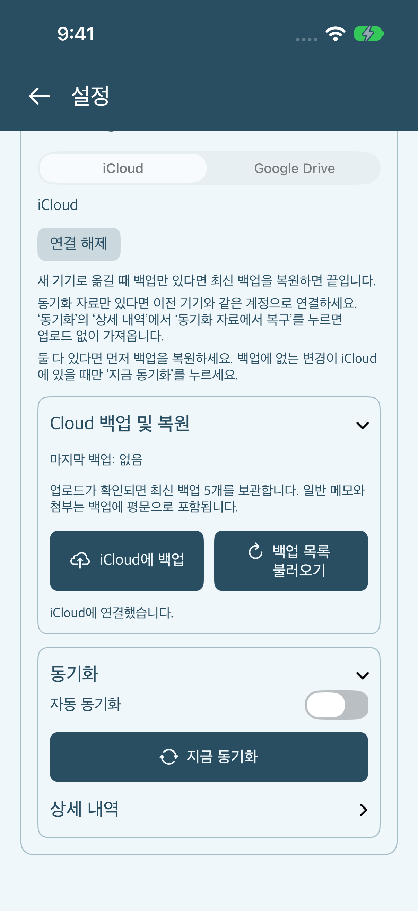
백업 보관과 삭제
새 백업이 정상 업로드되고 확인되면 최근 5개를 남기고 오래된 백업을 자동 영구 삭제합니다. 실패한 백업 때문에 기존 백업을 지우지는 않습니다. 보관 기준은 기간이 아니라 개수이므로 자주 백업하면 5개 모두 최근 자료일 수 있습니다.
직접 지우려면 백업에서 복원으로 목록을 열고 지울 백업의 삭제를 누릅니다. 파일 이름을 확인해 영구 삭제하면 되돌릴 수 없습니다. 현재 전화기의 메모는 지우지 않습니다. 오래 보관할 백업은 자동 정리 전에 별도로 보관하세요.
백업에서 복원하기
에버노트 메모 가져오기
- PC의 에버노트 앱에서 옮길 노트나 노트북을 ENEX(.enex)로 내보냅니다. 본문 암호화가 있다면 먼저 해제합니다.
- ENEX 파일을 휴대전화의 다운로드 폴더 등에 복사합니다.
- 설정 → 에버노트 메모 가져오기 → ENEX 파일 선택에서 파일을 고릅니다.
- 미리보기에서 제목과 개수를 확인하고 에버노트 메모 가져오기를 누릅니다.
- 에버노트에서 가져온 메모 서랍에서 내용과 첨부를 확인하고 백업합니다.
제목·본문·체크 표시·기본 서식·첨부와 작성·수정 날짜를 가져옵니다. 태그와 원본 주소는 본문 끝에 표시합니다. 복잡한 표나 서식은 달라질 수 있으며 알림·작업·노트북 구조를 자동으로 변환하지 않습니다. 필요한 메모는 다른 일반 서랍으로 정리하세요.
같은 자료는 중복을 건너뛰지만 내용이나 수정 날짜가 바뀐 자료는 별도 메모로 추가될 수 있습니다. 에버노트와 자동 동기화하거나 기존 메모를 덮어쓰지 않습니다. 원본 메모와 ENEX 파일은 삭제하지 않습니다. 파일이 크거나 실패하면 작은 묶음으로 나누어 먼저 시험하세요. 지원 형식은 ENEX이며 제한은 용량과 길이 제한을 참고하세요.
본인 소유이거나 가져올 권한이 있는 자료를 선택하세요. 가져오기는 기기 안에서 처리하며, iCloud / Google Drive 백업을 실행하면 가져온 자료도 백업에 포함됩니다. 원본 ENEX 파일은 서랍 암호화로 보호되지 않으므로 복사본도 관리하세요. 이 기능은 에버노트의 공식 제휴·인증 기능이 아닙니다. Evernote®는 Bending Spoons US Inc.의 상표입니다.
↑ 목차로13. 앱 설정과 설명서 이용하기
무료 버전은 기본 서랍을 포함해 7개까지 사용할 수 있습니다. 7개가 되면 새 서랍 만들기와 가져오기가 제한됩니다. 프리미엄은 광고 제거, 추가 서랍, 새 암호화와 클라우드 전송을 제공합니다. 구독이 만료돼도 기존 서랍을 열고 암호화 자료를 열람·복호화할 수 있습니다.
설정 → Cloud 연동에서 Apple 기기끼리는 iCloud를, Android와 함께 쓰려면 Google Drive를 선택하세요. 한 번에 한 저장소를 연결합니다. 유료 연결 후 ‘Cloud 백업 및 복원’에서 수동 백업·복원을, ‘동기화’에서 자동·수동 동기화를 사용합니다. 이 앱에서 iCloud 연결이 준비되지 않았다는 안내가 나오면 파일 백업을 이용할 수 있습니다. App Store 상품이 제공되는 빌드에서 구독할 수 있습니다.
연결 해제 후에도 메모와 첨부는 기기에 남습니다. 백업이나 동기화에 사용한 계정이 있으면 같은 계정으로 다시 연결하세요. 다른 계정으로 시작하려면 보관할 자료를 파일로 백업한 뒤 로컬 백업 및 복원에서 기기 자료 초기화를 별도로 확인해야 합니다.
서랍장 메뉴 → 설정 → 서랍장 카드를 펼치고 서랍장 이름 수정을 누르세요. 공백이 아닌 1~40자의 이름을 저장합니다. 같은 카드 아래에서 서랍장 테마를 고릅니다.
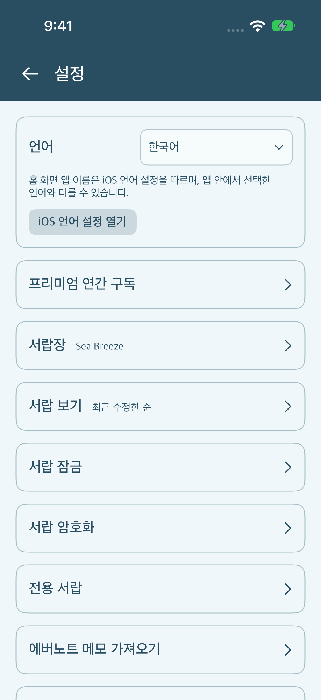
앱 언어
한국어·영어·일본어·힌디어·포르투갈어(브라질)·스페인어·인도네시아어를 지원합니다. 언어를 바꿔도 작성한 메모 내용은 바뀌지 않습니다.
서랍장 테마
미리보기 카드를 좌우로 밀어 원하는 테마를 누르세요. 기본 테마는 Sea Breeze입니다. 기본 테마에는 Sea Breeze, Blue Sky, Soft Green, Lavender Mist, Korean Paper, Honeycomb, Black and White, Classic Wood가 있고, 계절 테마에는 봄, 여름, 가을, 겨울, 크리스마스가 있습니다.
테마색은 화면과 앱 아이콘에 적용됩니다. 홈 화면의 앱 아이콘은 앱을 나간 뒤 화면을 껐다 켜면 반영됩니다. 홈 화면 앱에 따라 갱신이 늦을 수 있습니다. 예전에 Light Oak나 Warm Walnut을 사용했다면 Sea Breeze로 표시됩니다.
메모 보기
목록의 정렬 순서와 중요 메모 우선 표시를 정합니다.
전용 서랍
이전의 다른 앱 전용 백업 서랍은 더 이상 사용하지 않습니다. 메모나 휴지통 자료가 있으면 이전 앱 자료라는 일반 서랍으로 보존하며, 이름이 겹치면 번호를 붙입니다. 빈 서랍만 삭제합니다. 파일 백업·복원, 클라우드 백업·복구와 서랍 내보내기는 계속 사용할 수 있습니다.
잠금·가져오기·백업
서랍 잠금과 서랍 암호화는 11장, 에버노트 가져오기와 클라우드·로컬 백업 및 복원은 12장에 사용 방법과 주의할 점을 모았습니다. 로컬 백업 및 복원은 설정 맨 아래에 있습니다.
설명서 읽기·찾기·공유
서랍장 메뉴(☰) → 사용 설명서로 엽니다. 목차로 이동하고 찾기로 본문을 검색합니다. 공유 버튼으로 PDF를 보낼 수 있습니다.
헤더의 찾기에서 검색어를 입력하면 일치하는 부분을 강조합니다. 결과 번호와 위·아래 화살표로 이동하고 X로 찾기를 닫습니다. 공유는 설명서를 PDF로 보냅니다. 설명 글과 화면 예시는 설정에서 선택한 언어로 표시됩니다. 아이콘 그림은 공통으로 사용합니다.
설명서 안의 링크로 이동한 뒤 헤더의 굽은 화살표를 누르면 방금 읽던 위치로 돌아갑니다. 닫기를 누르면 설명서를 열었던 화면으로 돌아갑니다.
설명 글과 공통 아이콘은 인터넷 없이도 볼 수 있습니다. 화면 사진은 설명서를 처음 열 때 선택한 언어의 사진만 내려받습니다. 한 번 받은 사진은 앱을 다시 열어도 오프라인에서 볼 수 있습니다. 사진을 받지 못하면 인터넷에 연결하고 사진 다시 받기를 누르세요. 사진을 받기 전에 PDF로 공유하면 아직 받지 않은 사진은 제외됩니다.
설명서를 열 때 새 사진이 있는지 확인합니다. 이미 받은 사진은 먼저 보여주며, 새 사진은 다운로드와 검증이 모두 끝난 뒤 교체합니다. 인터넷이 없거나 갱신에 실패하면 기존 사진을 그대로 볼 수 있습니다.
기능이 작동하지 않을 때
- 카메라·음성·녹음·캘린더가 열리지 않으면 기기 설정에서 해당 앱 권한을 확인하세요.
- 캘린더 목록이 비어 있으면 휴대전화 캘린더 앱의 계정과 표시할 캘린더를 확인하세요.
- 할 일 알림이 오지 않으면 기기 설정의 알림 허용과 절전 설정을 확인하세요.
- 클라우드 백업이 실패하면 인터넷 연결·연결 계정·저장 공간을 확인하세요.
- 로컬 백업 파일을 찾지 못하면 파일 앱에서 저장한 폴더와 .nonbackup 확장자를 확인하세요.
용량과 길이 제한
| 항목 | 제한 |
|---|---|
| 메모 제목·본문 | 제목 200자, 본문 30,000자. 본문 10,000자 이상은 나누어 적기를 권합니다. |
| 첨부 용량 | 파일 하나 30MB, 한 메모의 첨부 전체 200MB |
| 첨부 개수 | 한 메모에 전체 50개, 그중 사진 30장 |
| 사진·그림 | 사진 원본 4,000만 화소. 그림 편집·회전 저장은 긴 변 최대 2048픽셀 |
| 에버노트 가져오기 | ENEX 하나 100MiB(약 105MB), 메모 5,000개. 가져온 메모에도 제목·본문·첨부 제한이 적용됩니다. |
| 로컬·Google Drive 복원 | 백업 파일 최대 2GiB. 큰 백업은 시간과 저장 공간이 더 필요합니다. |
제한에 걸리면 안내를 확인해 메모나 파일을 나누세요. 녹음이 30분 이상이면 나누어 보관하기를 권하며 파일 용량 제한도 적용합니다. 백업·복원·첨부·암호화 작업 전에 전화기의 여유 공간을 확보하세요.
↑ 목차로